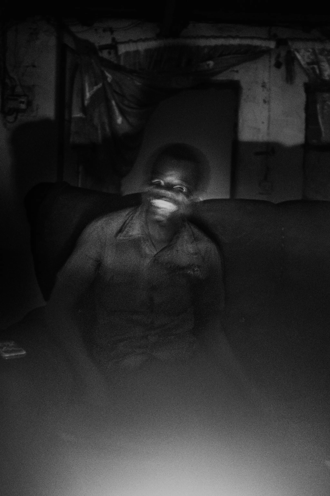
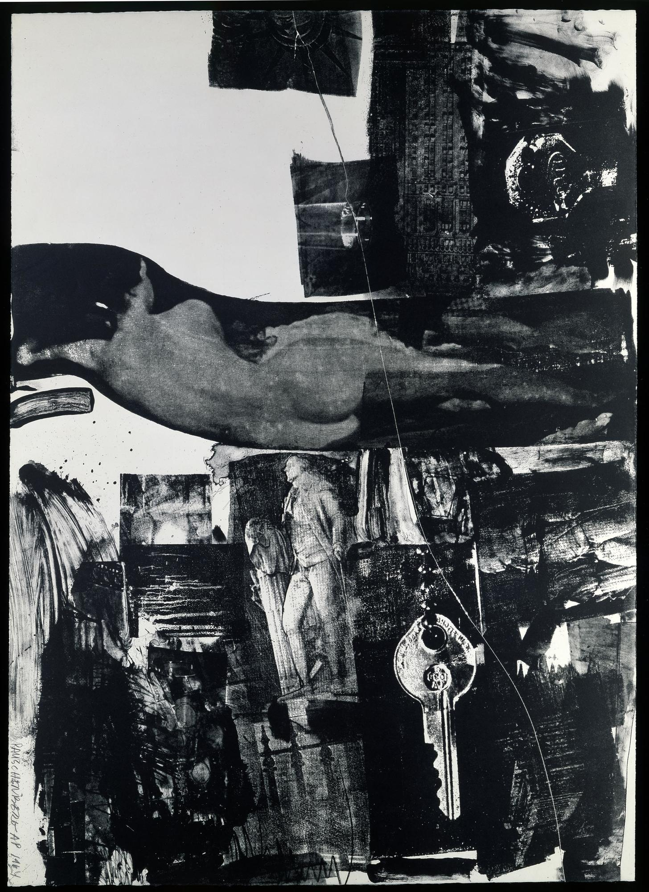

As early as 1835, the German philosopher Friedrich Schelling wrote of “das Unheimliche”, the uncanny, as ‘everything that ought to have remained hidden and secret and has become visible’. Years later, Sigmund Freud elaborated on what Schelling and others had thought about this ‘peculiar quality’, but he also ‘felt impelled’ to investigate it in relation to aesthetics. In his influential essay ‘The “Uncanny”’, 1919, Freud saw there was a common thread to everything that arouses our sense of the uncanny: it ‘is that class of terrifying which leads back to something long known to us, once very familiar’. Although individual responses are complex and subjective, what we experience as uncanny is that which gives us a feeling of unease when something seems both familiar and unfamiliar, when some quality effaces the distinction between the imagined and the real. As the future becomes the present technology continues to advance. Hyper-realistic simulation is now possible and 'uncanny moments' in our daily lives are becoming more common. Could this phenomena be GLITCHES within the fabric of reality being revealed to our observing eyes, or are these just unerving figments of our imagination?
The Uncanny
1
Dark Reflections
Angela-Kelly 1, 'The Uncanny Moment', 1974-75
2
The Rain
Angela-Kelly 2, 'The Uncanny Moment', 1974-75
3
Uncanny Jockey
Angela-Kelly 3, 'The Uncanny Moment', 1974-75
4
Infinity Suburb
Angela-Kelly 4, 'The Uncanny Moment', 1974-75
5
Garden Child
Angela-Kelly 5, 'The Uncanny Moment', 1974-75
6
The Window Cleaner
Angela-Kelly 6, 'The Uncanny Moment', 1974-75
7
Dog or Robot?
Reddit User - jimphenomenon87,
Mornington Peninsula, Victoria, Australia, 2009
8
Standing Girl
Pursuing the Uncanny: Ralph Eugene Meatyard, Lexington, KY, 1967
9
Birds of a Feather
Documented Occurances 1999,
Petticoat Creek Beach, Victoria, Australia

10
Paddock Duplication
Documented Occurances 1999,
Upper Skenes Creek Road, Victoria, Australia
11
Conspiracy
“Searching for K,” Alfredo Jaar's 1984 collation of photographs,
Credit...Haruka Sakaguchi for The New York Times
12
Lee Harvey Oswald
The Lee Harvey Oswald Interview, 1976 © Lutz Bacher. Courtesy of the artist and Greene Naftali, New York
13
Mystery Clipping
Raymond Cass,
Full Press Newspaper Article 18 Oct 1979,
Signals Remain Mystery, United Kingdom
14
Puppet Master
The Black Panther illustration, September 21, 1974, September 21, 1974 © 2018 Emory Douglas / Artists Rights Society (ARS), New York
15
Uncanny Congo 1
Pongo Léonard, 2011 - Ongoing,
Democratic Republic of the Congo

16
Uncanny Congo 2
Pongo Léonard, 2011 - Ongoing,
Democratic Republic of the Congo
17
Uncanny Congo 3
Pongo Léonard, 2011 - Ongoing,
Democratic Republic of the Congo

18
Facial Recognition
Trevor Paglen, They Took the Faces from the Accused and the Dead, 2019,
detail, courtesy of the artist
19
Milky
Tracey Kerdman, “People of Faux”,
UNREAL REALISM BY TRACY KERDMAN
February 5, 2017
20
Dummy
Harry Lester, a.k.a. "The Great Lester"
Ventriloquism dummy Frank,
Detroit Police Department "Bureau of Identification", 1924
21
The Flying Saucer
Jim Shaw, UFO Polaroid, from the series UFO Photos, 1977

22
Uncanny Artwork
Breakthrough I, Robert Rauschenberg 1964, Art Institute of Chicago, USA